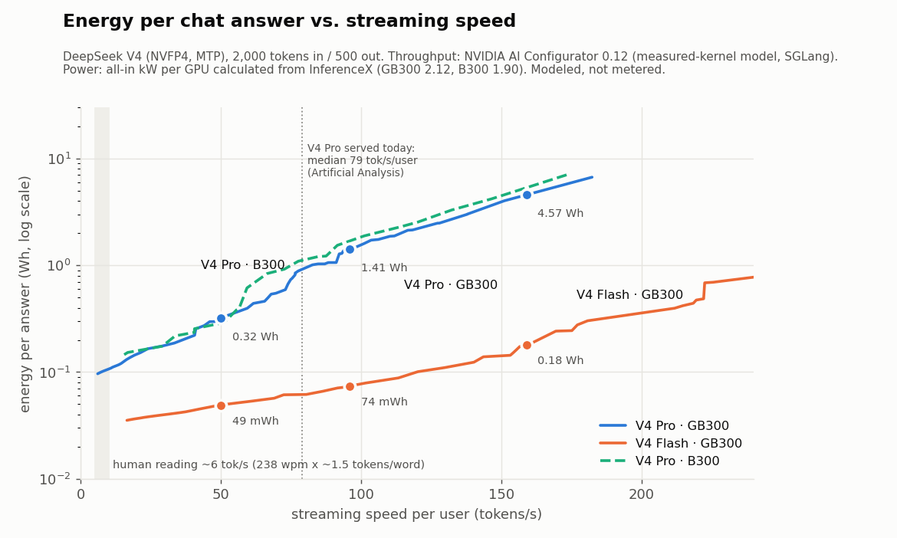
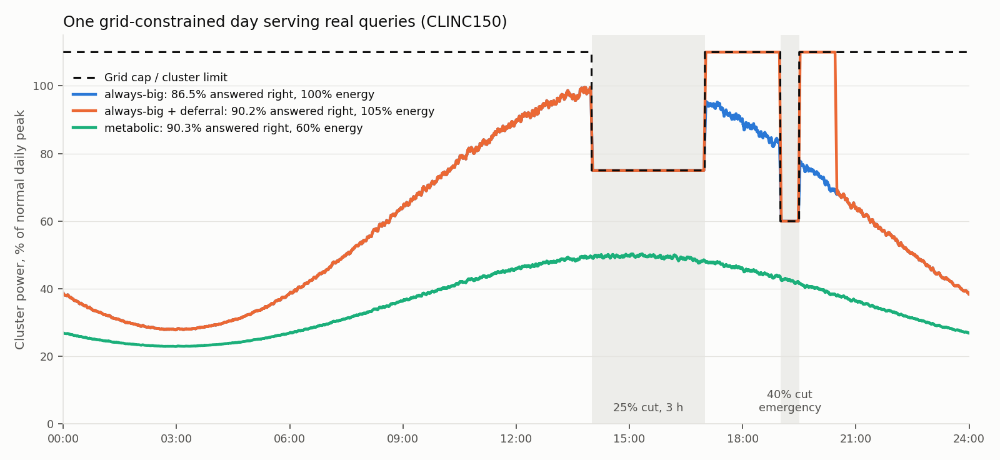
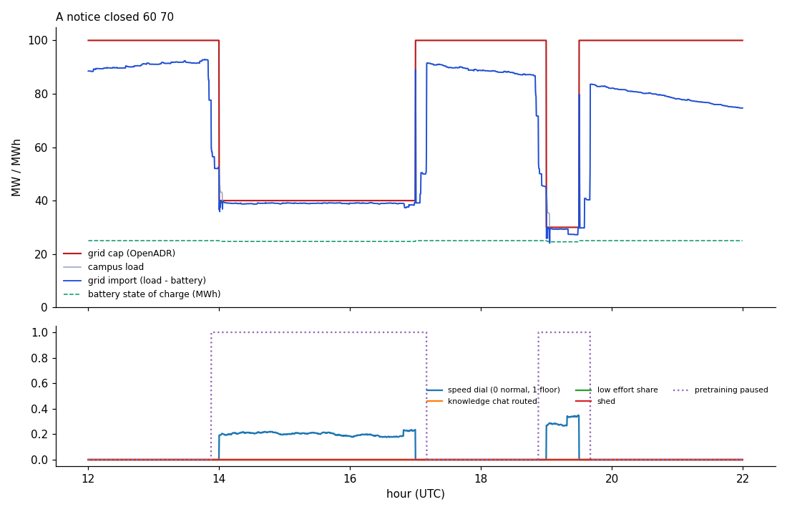
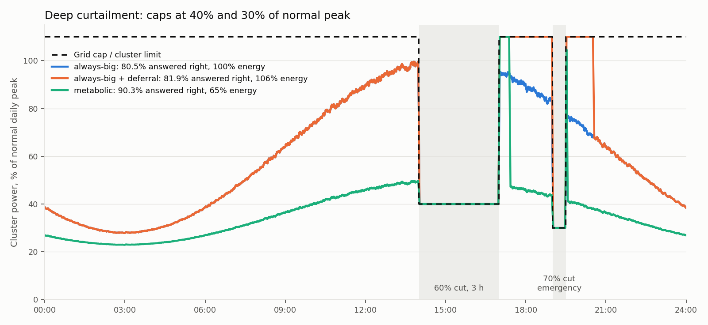
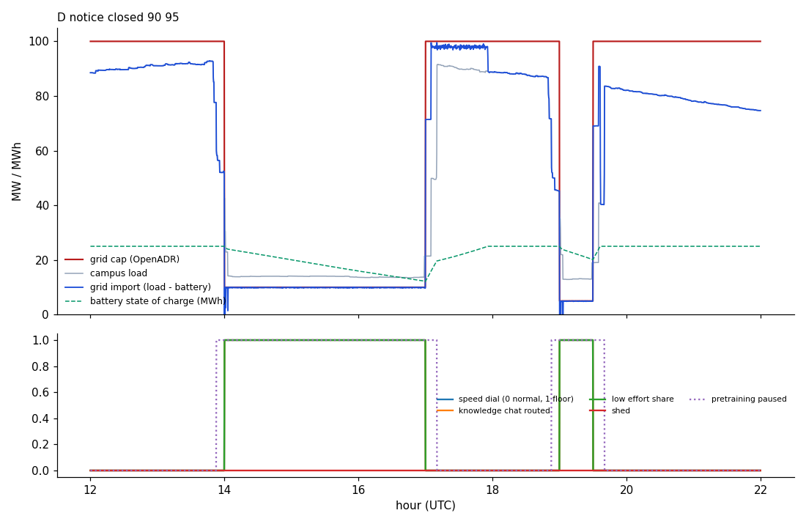
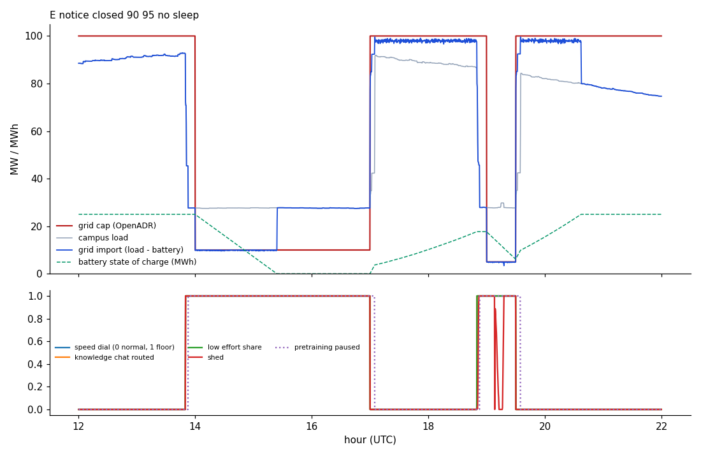
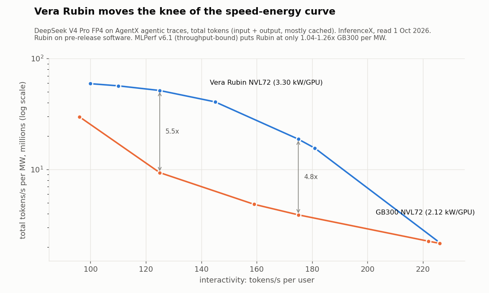
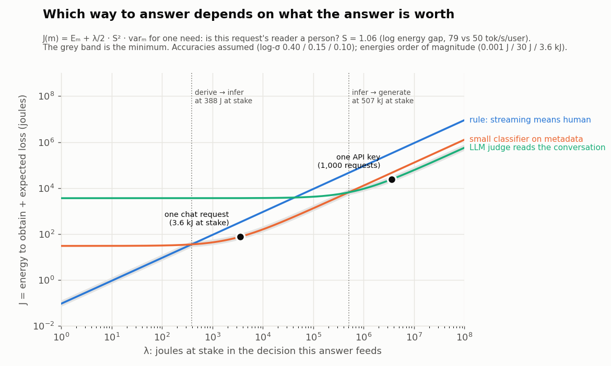

Metabolic Intelligence & MEI-JCP-Tag-v1 Interactive Explorer
Energy binds. The envelope is the physical condition of the superior answer. Explore the dual-scale study figures alongside the interactive MEI-JCP-Tag-v1 2-layer PCB, 3D B-Rep enclosure, CR2032 cold-chain battery simulator, and Ed25519 JCR-1 cryptographic receipt ledger.
How to read this page
- Interactive Tag & JCP Explorer (
#mei-jcp-explorer). Sweep ambient temperature (-25 °Cto+30 °C) to watchCR2032Arrhenius resistance sag andJCPtwo-phasehold/settlesharding protect 100% of critical alerts, inspect the 0-DRC 2-layer PCB and 3D enclosure, and verify the signedJCR-1receipts. - Dual scale & enzyme recognition. Same thesis at a coin-cell tag and at a budget-capped lean campus; digital enzymes fit Cortex-M4 instruction budgets.
- Grid levers & J(m|q). Ordered campus actuators free megawatts with least service lost; open Model last when Value of Information justifies the joules.
mei-hw-01 Interactive Cold-Chain CR2032 Electrochemistry & 10,000-Wakeup JCP Hold/Settle Explorer
cad-sim::battery + jcp-runtime est_j simulation · measured_j: null
Adjust ambient temperature, radio pulse current, and the isolated safety reserve. Under cad-sim::battery's Arrhenius impedance curve ($R_{\text{int}}(T) = R_{25}\cdot f(\text{SOC})\cdot \exp(3000(1/T - 1/298.15))$), deep-freeze storage (-20 °C) raises cell resistance from 12.0 Ω to 71.8 Ω. Sharding the mission grant via jcp_grant::shard and gating every transmission with Runtime::hold_chained / settle_chained refuses non-essential routine beacons before brownout while keeping 40 / 40 (100%) safety-critical threshold excursion alerts intact.
Exact preset points match receipts/conformance_summary.json generated by mei-jcp-tag-builder + jcp-satb-cad-spine.
mei-hw-02 MEI-JCP-Tag-v1 Reference Hardware: 2-Layer Routed PCB (0 DRC Violations) & 3D B-Rep Enclosure
openie-cad: cad-eda + cad-router + cad-kernel Fabrication package · board_metered: false
Left/top: programmatic 32.0 mm × 24.0 mm 2-layer FR-4 layout (10 parts, 46 pads, 14 nets, 135 trace segments, 14 vias, 280.23 mm routed copper, cad-eda DRC 0 errors / 0 warnings). Right/bottom: 4-view hidden-line-removed orthographic engineering drawing of the base-seated 36.0 mm × 28.0 mm × 7.5 mm vented cold-chain enclosure (2,702.12 mm³, 2.837 g ABS, 852 STL triangles, 174,694 B ISO-10303 STEP). Click any BOM part below to inspect its net bindings and LCSC code.

/figures/mei/mei-jcp-tag-pcb.svg — exported alongside RS-274X Gerbers, Excellon .drl, mei_jcp_tag_v1.kicad_pcb, bom.csv, and cpl.csv.
/figures/mei/mei-jcp-tag-enclosure.svg — generated via cad_format::drawing::multiview_svg_hlr from the cad-kernel NURBS B-Rep body.mei-hw-03 Unified SATB-IO ↔ openie-cad ↔ JCP JCR-1 Spine & Live Receipt Inspector
Ed25519 COSE_Sign1 · Canonical Det-CBOR reported_j (Linux RAPL) + est_j · measured_j: null
Inspect the 8 hash-chained JCR-1 receipts sealed during the mei-jcp-tag-builder hardware build pipeline (head = d5b3827b429093fd...20e01b2cd). Notice how live shared-host idle fluctuations (> 5.00% = 500 bps) automatically trigger SATB Falsifier 6 (omitting satb_derived_marginal_uj while sealing satb_raw_counter_uj), how SATB Step 7 verifies 0 µJ phase-sum residual, and how seq 6 → 7 seals a two-phase hold (250 J) followed by a post-execution settle (268.23 J) recording caveat-unsatisfied without hiding a single microjoule of spend.

Steward public key (Ed25519): 22fc297792f0b6ffc0bfcfdb7edb0c0aa14e025a365ec0e342e86e3829cb74b6 · jcp_receipt::verify_log: 8 / 8 valid · unresolved_holds: 0.
mei-arg-01 Why this is the future
Teaching diagram Thermodynamic bounds + pack labels
Read top to bottom. Energy binds by physical principles, not by a slogan. The transformer corridor can keep improving and still plateau as a deployment future, because uncapped import stops buying the next useful answer. Metabolic Intelligence obtains the superior answer under the metabolic envelope. Not a cheaper answer. Mixture of Limits chooses the gear. Two plants, edge and resource-optimized central, remove the hyperscale water and power prerequisite by design. That is not a liter count and not a board measured_j. Klere is the product home. Research owns the class.
Static teaching figure. Soft-ref: board_synth_claimed=false.
mei-diag-01 Budget-in → best-answer-out (dual scale)
Teaching diagram Unmetered
Look at both ends of the same class. On the left, the plant is a coin cell. On the right, the plant is a grid-following import cap. The middle box is the rule: the envelope B is the physical condition of the superior answer. Dedicated water, power, and hyperscale cooling plants are not required by design at these envelopes. That is a design consequence, not a liters-saved meter.
Manim clip plus static SVG. Soft-ref: board_synth_claimed=false. Study: §1–§2.
mei-diag-02 J(m|q) obtain router
Calculation + looked-up Estimated
Watch the cascade left to right. Lookup and Formula close first when grammar covers the need. Solver resolves when physics needs it. Model opens last. Guess is residual. The rule under Mixture of Limits is m* = argmin J(m|q). Wh/answer bands on this path are estimates, not board measured_j.
Lookup → Formula / Calculate → Solver → Model LAST → Guess m* = argmin_m J(m|q) = E_m + λ · ½ · S_q² · var_m(t)
Standing obtain rule. Study §3. Price the obtain zone, not only which LLM answers.
mei-tab-01 Digital enzyme vs int8 MLP (instruction counts)
Emulator-measured Pack MCU
Compare recognition cost under a matched Cortex-M4 decision setting. Enzymes with early exit take fewer instructions than a dense int8 MLP. On SmellNet sequential learning (50 foods, five groups, no revisit), enzymes keep accuracy across groups while the MLP drops sharply. Instruction counts are not a wattmeter. Do not upgrade them to board joules.
| Model (Cortex-M4 pack) | Instr / decision | Notes | Evidence |
|---|---|---|---|
| Enzyme families + early exit (12-feature pack row) | 1,723 | Matched decision setting vs MLP | Emulator (unicorn / pack mcu/) |
| int8 MLP (same setting) | 2,451 | Baseline dense leaf | Emulator |
| SmellNet sequential (50 foods, 5 groups, no revisit) | — | Enzymes 77.7% vs MLP 18.4% | Real dataset protocol |
Unlicensed third-party chicken-spoilage dataset excluded from publication. Study §4.1–§4.2.
mei-tab-02 Tag metabolic schedule (~10 µW class)
Datasheet + schedule model
The heater is not always the dominant cost. On the metabolic schedule with T/RH wake and a 4 h cap, sleep current dominates. Total average power sits near 10 µW in the pack model. Capacity years are a model from CR2032 datasheet capacity at 21 °C; see mei-hw-01 above for low-temperature derating.
| Policy (BME690 + STM32U3) | Heater µW | Sleep µW | Total µW | CR2032 years (model) |
|---|---|---|---|---|
| fixed every 0.5 h | 15.00 | 6.93 | 21.93 | ~3.7 |
| fixed every 1 h | 7.50 | 6.93 | 14.43 | ~5.6 |
| fixed every 4 h | 1.88 | 6.93 | 8.81 | ~9.1 |
| metabolic + T/RH wake, cap 4 h | 2.99 | 6.93 | 9.92 | ~8.1 |
| metabolic + T/RH wake, cap 8 h | 2.26 | 6.93 | 9.19 | ~8.8 |
From pack tag_budget_2026_results.json. Study §4.3.
mei-chart-01 Energy vs speed (pack chart)
Curves / measured-kernel model Estimated
Speed-matching and Flash-first are test-time levers under a live budget. They are not a new pretrain. Wh/answer remains an estimate with stated bands.

datacenter/curves/energy_vs_speed.png (AI Configurator curves × estimated all-in kW/GPU). Study §5.mei-chart-02 Grid day mechanism (pack chart)
Plant model Mechanism test
Cluster power tracks a simulated grid day under several policies. Use this with OpenADR/DSX protocol evidence. Do not treat the plant model as a field meter.

datacenter/grid_day.png. Study §6.mei-chart-03 Grid service scenario A (notice, closed loop)
Real protocol + plant model
Protocols (OpenADR 3.1 VTN, DSX Flex MQTT) are real. Campus watts are the plant model. With node sleep available, the closed scenario set shows zero time over cap in the pack headline.

datacenter/service/tests/grid_day_A_notice_closed_60_70.png.mei-chart-04 Stress day (pack chart)
Plant model
Stress day shows how levers stack when the grid asks harder. Still a plant model. Pair with scenario A and the D/E sleep contrast below.

datacenter/grid_day_stress.png.mei-chart-05 Scenario D vs E: 90–95% cut, sleep on/off
Real protocol + plant model
Same deep cut. Left (D) keeps node sleep available. Right (E) removes sleep. The contrast teaches why sleep is a first-class lever, not an afterthought.


Pack assets under datacenter/service/tests/. Do not sell “100% served through 90% cut” as a universal field result.
mei-chart-06 Vera Rubin vs GB300 (field peer curve)
External field / pack curve Estimated composite
This chart orients campus energy-per-answer talk against published peer hardware curves. It is an envelope actuator context chart, not an OpenIE board meter.

datacenter/curves/vera_rubin_vs_gb300.png. Cite InferenceX / MLPerf peers in the study; do not invent OpenIE measured_j.mei-chart-07 Consumer regime detection (synthesis)
Synthesis / schedule model
Consumer speed tiers feed the metabolic gateway. Regime detection tells which lever to pull first under a live budget. This is software-path evidence, not a GPU wattmeter.

synthesis/regime_consumer_detection.png. Study §3 and §6.mei-diag-03 Grid lever order (least service lost per MW)
Real protocol demos Plant model
Pull levers left to right. Pause first. Then slow speed. Then route to a smaller model. Then lower effort. Then battery. Shed last.
OpenADR 3.1 + DSX Flex–shaped service. Study §6.
mei-map-01 Hardware dual-map
Operational map Unmetered
The class runs today on GPUs and MCUs, backed by the MEI-JCP-Tag-v1 2-layer PCB fabrication package. It points at neuromorphic, analog / in-memory, photonic, and reversible / adiabatic substrates next. Map status is not a physical bench reading.
| Leaf | Runs today (von Neumann) | Post–von Neumann path | Status in study |
|---|---|---|---|
| Digital enzyme + JCP tag | MCU / Cortex-M4 C + MEI-JCP-Tag-v1 2-layer PCB | Content-addressable / sparse associative | Emulator instructions + 0-DRC CAD fab package |
| J(m|q) router | CPU / gateway service | N/A (software) | Math + ledger |
| Campus levers | GPU planners, Redfish, MQTT | Analog power fabrics (speculative) | Real protocols; plant model |
| Latent / EBM optional | GPU ViT / Lean | Analog DenseAM / memristor Hopfield | Cited peers; not OpenIE meters |
Teaching map. Soft-ref path: board_synth_claimed=false.
Shipped Manim: mei-diag-01 dual scale, mei-diag-02 obtain router (mp4/webm/gif). Interactive CAD/JCP explorer: mei-hw-01..03.
Measurement note
No physical tag bench joules are claimed here (board_metered: false, measured_j: null). Evidence classes: real protocol / emulator / datasheet / CAD-verified fabrication package / build-host Linux RAPL (reported_j) / curves / plant model.
Pack third-party notices: PACK_THIRD_PARTY_NOTICES.md.